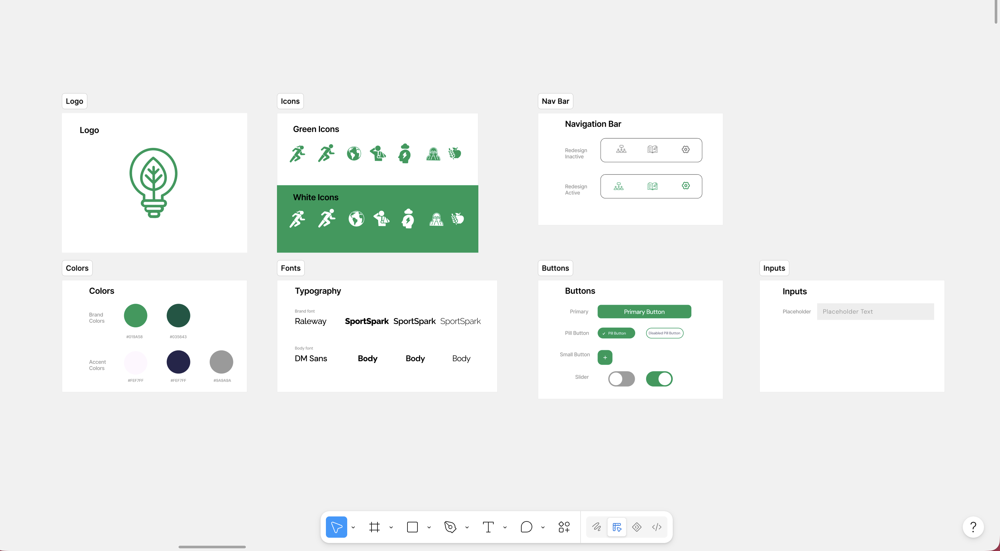
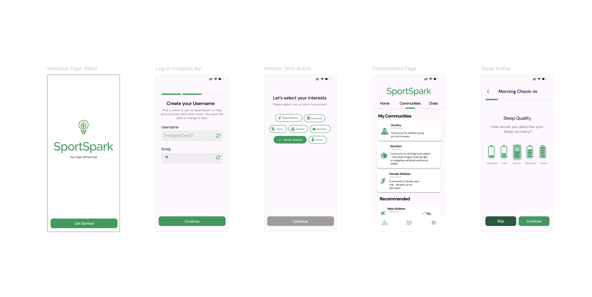

Overview
SportSpark started as a working app already in TestFlight, built by two college athletes and a small, international dev team. Its goal: give college athletes a private space to check in on their mental health and connect with teammates navigating similar pressures: homesickness, performance anxiety, body image, injury recovery. I joined as design lead on a full usability audit and redesign, tasked with taking the app from a functional first draft to something that felt trustworthy, intuitive, and genuinely usable for someone reaching for their phone on a hard day.
Problem
Testing the first version surfaced a pattern: almost every screen asked a stressed user to do a small amount of extra interpretive work, and for a wellness app, that friction compounds. Research on app abandonment suggests a meaningful share of users give up entirely on an app that's too slow to figure out or too complicated, and first impressions matter most in the first few screens. Specifically, the audit turned up:
- An onboarding flow that didn't establish what the app was or why to trust it before asking for personal information
- Iconography built on emoji, which read inconsistently across users and clashed with the wellness tone the app needed
- Check-in surveys mixing emoji scales with wide 1-10 sliders, adding ambiguity to already-sensitive questions
- Bottom navigation icons that were easy to misread: the speech bubble read as direct messaging rather than community, and the journal icon looked like a news feed
- A journaling section with no lightweight way to just write, and repeat prompts that made past entries hard to relocate

Process
Because the app deals with a sensitive audience, I wanted every recommendation to be grounded in something more than personal preference. I pulled in research from Nielsen Norman Group on icon usability, the APA on survey length in wellness apps, the Journal of Medical Internet Research on labeled versus numeric scales, and a MeasuringU/Toepoel & Funke comparison of sliders against Likert scales, then used that research to make the case for each change to the dev team.
- Audited the existing TestFlight build screen by screen against usability heuristics, flagging friction points before proposing fixes
- Rebuilt onboarding to introduce the app's purpose and a trust-building tagline up front, added a progress indicator to the multi-step signup, and used a randomized username generator so users wouldn't stall on a small decision
- Replaced emoji icons with a custom system: tested a "5-second rule" (if a concept takes a designer more than five seconds to picture as an icon, it's too abstract to force into one) and prototyped four visual directions (clinical, simple, artistic, humanistic) before landing on a simple/humanistic hybrid for topics like injury, stress, anxiety, and nutrition
- Redesigned check-in surveys around 5-point labeled Likert scales instead of emoji and wide numeric sliders, with wording tailored to each question (sleep quality, energy, mood, soreness, anxiety) and the option to skip any question
- Reworked the bottom navigation icons, swapping the speech bubble for a community icon and the newspaper-style icon for an open book, so each better matched what it actually led to
- Reorganized the journaling section: added a quick-access option to freewrite from the journal home screen, proposed categories (motivation, stress, negative emotions, social media, self-care, mental health) to make repeat prompts easier to relocate, and added the option to title entries
- Ran usability testing sessions through TestFlight with real users, gathered feedback, and iterated on the designs before final handoff
- Presented the audit and redesign to SportSpark's international development team and worked with them directly on implementation
Solution
The final redesign brought the app into one cohesive system: a custom icon set built specifically for SportSpark's tone, onboarding that explains itself before asking anything of the user, check-ins built on a validated survey format instead of ambiguous scales, navigation icons that map to what they actually do, and a journaling space flexible enough for a quick note or a longer, prompted reflection. Based on usability feedback, I also proposed a new journal type for athletes who wanted a place to log takeaways from therapy sessions. That need came directly out of testing, not the original brief.

Outcomes
The redesign shipped to the App Store, where real college athletes downloaded and used it. That was genuinely one of the highlights of this project, seeing a product I'd audited and redesigned end-to-end in actual users' hands. The app has since come down while SportSpark's founders take a break from active development, but the redesign is complete and the Figma files remain ready to pick back up whenever the team returns to it.
Reflection
This project pushed me to back up design opinions with evidence rather than taste alone, especially working with a remote, international dev team where I couldn't rely on being in the room to make the case in person. Citing research made it much easier to get alignment on recommendations. It also reinforced how much small, cumulative friction matters in an app someone opens during a hard moment: the individually "minor" issues in the original build were, together, the whole experience. If I revisited it, I'd want to define the icon system earlier in the process, since it ended up touching nearly every other screen I redesigned.